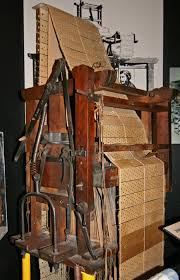

Augusta Ada Byron (1815-1852), más conocida como Ada Lovelace, fue una matemática y escritora inglesa considerada la primera programadora informática de la historia. Era hija del reconocido poeta Lord Byron y de Annabella Milbanke, quienes se separaron legalmente dos meses después del nacimiento de Ada. Por entonces, el escritor abandonó Gran Bretaña para siempre y ella nunca lo conoció personalmente, asegura la Enciclopedia Britannica. Durante su infancia, fue una niña muy curiosa y su madre se ocupó de que aprendiera matemáticas ya que no quería que fuera poeta como su padre, que se había desentendido de ellas, apunta un documento difundido por No more Matildas, un movimiento creado por la Asociación de Mujeres Investigadoras y Tecnólogas (Amit).
La joven fue educada en privado por tutores y de forma autodidacta. No obstante, un hito en su aprendizaje ocurrió en 1833, cuando conoció a Charles Babbage, llamado el “padre de la computadora”. Lovelace se interesó en un concepto que tenía sobre un dispositivo mecánico para calcular valores de funciones cuadráticas, señala la NASA. La máquina de Babbage sólo utilizaba sumas y restas, pero podía realizar cálculos complejos e imprimir los resultados en forma de tabla y fue suficiente para despertar aún más el interés de esta joven británica por las matemáticas, rememora un artículo publicado por el Instituto Nacional de Estándares y Tecnología (NIST, por sus siglas en inglés) una agencia del Departamento de Comercio de los Estados Unidos, en 1835 conoció a William King, con quien contrajo matrimonio. Pocos meses después del nacimiento de su tercer hijo, en 1839, Lovelace decidió volver a dedicarse a la ciencia y comenzó a estudiar bajo la supervisión de Augustus De Morgan, un destacado profesor de la Universidad de Londres.
Pero, aun así, existe mucha controversia y debate sobre si realmente Ada escribió ese algoritmo o si copió parte de los trabajos de Babbage o si de plano, lo copió en su totalidad. En parte porque era muy raro que una mujer tuviera ese nivel de conocimiento de las matemáticas para ese tiempo y porque en la correspondencia entre Babbage y Ada, se muestra que sus conocimientos de las matemáticas no eran tan elevados.En lo que están de acuerdo casi todos los que han estudiado el tema, es que Ada no era un genio de las matemáticas, pero sí una visionaria de la computación. De lo que estamos seguros es que: Si bien Babbage había escrito algoritmos antes, nunca fueron publicados, a diferencia del de Ada. Con lo cual, ella es la primera persona en publicar un programa de computadora y eso es indiscutible.
Como resultado, a veces se la considera la primera en dar cuenta del potencial de una "máquina informática" y la primera programadora de computadoras. Los apuntes de la matemática inglesa se consideran la primera y más completa descripción de los ordenadores, según el NIST. Por medio de su capacidad crítica y creativa sentó las bases para escribir el primer programa informático. En una de sus notas de la traducción, Lovelace predijo que, aunque las computadoras tendrían un potencial infinito, no podrían ser verdaderamente inteligentes. Argumentaba que un programa sólo podría diseñarse para hacer lo que los humanos saben hacer. “En otras palabras, creía que la inteligencia artificial no puede crear nada original sin aprender de la aportación humana”, señala la autora del artículo del NIST.
Sumado a lo anterior, el lenguaje de programación Ada, debe su nombre a la matemática inglesa, agrega Britannica. Debido a la trascendencia histórica y científica de esta mujer, el segundo martes de octubre se ha convertido en el Día de Ada Lovelace. Durante esta jornada se honran las contribuciones de las mujeres a la ciencia, la tecnología, la ingeniería y las matemáticas.